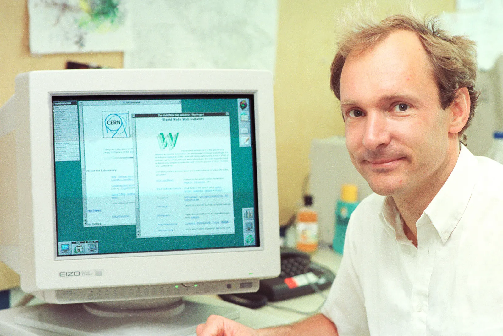

In 1989, while working at CERN, Tim Berners-Lee invented the World Wide Web, an Internet-based hypermedia initiative for global information sharing. He wrote the first web client and server in 1990. As Web technologies spread, his URI, HTTP, and HTML specifications were refined. He is Director of the World Wide Web Consortium (W3C), a web standards organization founded in 1994 to develop interoperable technologies (specifications, guidelines, software, and tools) to guide the Web to its full potential. He is a founding director of the Web Science Trust (WST), established in 2009 to advance research and education in Web Science, a multidisciplinary study of human beings connected through technology. Berners-Lee is also a director of the World Wide Web Foundation, which was established in 2009 to coordinate efforts to further realize the potential of the World Wide Web to benefit humanity.
